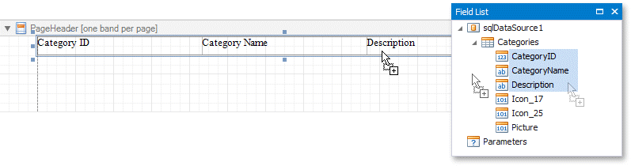

Add Controls to a Report
This document describes how to add controls to a report.
Add Controls from the Standard Controls Bar
Use the End-User Designer's Toolbox to add controls to your report.
Add Data-Bound Controls from the Field List
You can drag fields from the Field List onto your report to add data-bound controls, after you bound your report to a data source.
Add a Control
Drag a field from the Field List and drop it onto the report's surface.
To add a control of specific type, do either of the following:
- Hold down the SHIFT key and drop a data field onto a report's surface.
- Right-click a data field and drop it onto a report's surface.
This invokes a context menu where you can select which control to add.

Add a Table
Hold the CTRL or SHIFT key and click several fields. Drop them onto the report's surface to add a table with its cells bound to these fields.

Drop an entire data table from the Field List to add a report table with columns bound to the data table's fields.

To add column headers, do either of the following:
- Select the fields and hold the CTRL or SHIFT key when you drop them onto a report surface.
- Drag and drop fields with the right mouse button.

This adds a new table whose cells display the field names.
Add Content from External Sources
You can add text and graphics from external applications to your reports:
Drag a file, text or image from an external application onto your report.
Copy a file, text or image from an external application, and paste it into your report.

The following table shows which file types transform into report controls:
| File Type | Control |
|---|---|
| .TXT | A Label control that contains file contents. |
| .DOC, .DOCX, .RTF, .HTM, .HTML | A Rich Text control that contains file content. |
| .JPG, .PNG, .BMP, .GIF, .TIF, .SVG | A Picture Box control that contains the image. |